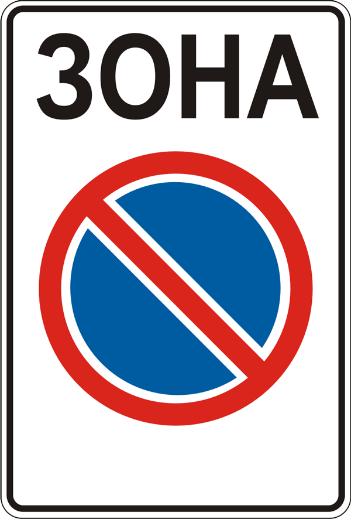

Обов’язки і права водіїв механічних ТЗ
2.1. Водій механічного транспортного засобу повинен мати при собі:
а) посвідчення водія на право керування транспортним засобом відповідної категорії;
б) реєстраційний документ на транспортний засіб (для транспортних засобів Збройних Сил, Національної гвардії, Держприкордонслужби, Держспецтрансслужби, Держспецзв’язку, Оперативно-рятувальної служби цивільного захисту – технічний талон);
в) у разі встановлення на транспортних засобах проблискових маячків та (або) спеціальних звукових сигнальних пристроїв – дозвіл, виданий уповноваженим органом МВС, а у разі встановлення проблискового маячка оранжевого кольору на великогабаритних та великовагових транспортних засобах – дозвіл, виданий уповноваженим підрозділом Національної поліції;
г) на маршрутних транспортних засобах – схему маршруту та розклад руху; на великовагових і великогабаритних транспортних засобах та транспортних засобах, що здійснюють дорожнє перевезення небезпечних вантажів, – документацію відповідно до вимог спеціальних правил;
ґ) чинний страховий поліс (страховий сертифікат “Зелена картка”) про укладення договору обов’язкового страхування цивільно-правової відповідальності власників наземних транспортних засобів або чинний внутрішній електронний договір зазначеного виду обов’язкового страхування у візуальній формі страхового поліса (на електронному або паперовому носії), відомості про який підтверджуються інформацією, що міститься в єдиній централізованій базі даних, оператором якої є Моторне (транспортне) страхове бюро України. Водії, які відповідно до законодавства звільняються від обов’язкового страхування цивільно-правової відповідальності власників наземних транспортних засобів на території України, повинні мати при собі відповідні підтвердні документи (посвідчення);
д) у разі встановлення на транспортному засобі розпізнавального знака “Водій з інвалідністю” – документ, що підтверджує інвалідність водія або пасажира (крім водіїв з явними ознаками інвалідності або водіїв, які перевозять пасажирів з явними ознаками інвалідності).
2.2. Власник транспортного засобу, а також особа, яка використовує такий транспортний засіб на законних підставах, можуть передавати керування транспортним засобом іншій особі, що має при собі посвідчення водія на право керування транспортним засобом відповідної категорії.
Власник транспортного засобу може передавати такий засіб у користування іншій особі, що має посвідчення водія на право керування транспортним засобом відповідної категорії, передавши їй реєстраційний документ на цей транспортний засіб.
2.3. Для забезпечення безпеки дорожнього руху водій зобов’язаний:
а) перед виїздом перевірити і забезпечити технічно справний стан і комплектність транспортного засобу, правильність розміщення та кріплення вантажу;
б) бути уважним, стежити за дорожньою обстановкою, відповідно реагувати на її зміну, стежити за правильністю розміщення та кріплення вантажу, технічним станом транспортного засобу і не відволікатися від керування цим засобом у дорозі;
в) на автомобілях, обладнаних засобами пасивної безпеки (підголовники, ремені безпеки), користуватися ними і не перевозити пасажирів, не пристебнутих ременями безпеки. Дозволяється не пристібатися особі, яка навчає водінню, якщо за кермом учень, а в населених пунктах, крім того, водіям і пасажирам з інвалідністю, фізіологічні особливості яких заважають користуватися ременями безпеки, водіям і пасажирам оперативних та спеціальних транспортних засобів і таксі;
г) під час руху на мотоциклі і мопеді бути в застебнутому мотошоломі і не перевозити пасажирів без застебнутих мотошоломів;
ґ) не забруднювати проїзну частину та смугу відведення автомобільних доріг;
д) не створювати своїми діями загрози безпеці дорожнього руху;
е) повідомляти дорожньо-експлуатаційним організаціям або уповноваженим підрозділам Національної поліції про виявлені факти створення перешкод для дорожнього руху;
є) не вчиняти дій, внаслідок яких може бути пошкоджено автомобільні дороги та їх складові, а також завдано шкоди користувачам.
2.4. На вимогу поліцейського водій повинен зупинитися з дотриманням вимог цих Правил, а також:
а) пред’явити для перевірки документи, зазначені в пункті 2.1;
б) дати можливість перевірити номери агрегатів і комплектність транспортного засобу;
в) дати можливість оглянути транспортний засіб відповідно до законодавства за наявності на те законних підстав, у тому числі провести з використанням спеціальних пристроїв (приладів) зчитування інформації із самоклейної мітки радіочастотної ідентифікації про проходження обов’язкового технічного контролю транспортним засобом, а також перевірку технічного стану транспортних засобів, які відповідно до законодавства підлягають обов’язковому технічному контролю.
2.4-1. У місці здійснення габаритно-вагового контролю на вимогу працівника пункту габаритно-вагового контролю або поліцейського водій вантажного автомобіля (в тому числі механічного транспортного засобу) повинен зупинитися з дотриманням вимог цих Правил, а також:
а) передати для перевірки документи, зазначені в підпунктах “а”, “б” і “г” пункту 2.1 цих Правил;
б) надати транспортний засіб та причіп (за наявності) для вагового та/або габаритного контролю відповідно до встановленої процедури.
2.4-2. У разі виявлення під час здійснення габаритно-вагового контролю невідповідності фактичних вагових та/або габаритних параметрів установленим нормам і правилам рух такого транспортного засобу та/або причепу забороняється до отримання в установленому порядку дозволу на проїзд автомобільними дорогами транспортних засобів, вагові або габаритні параметри яких перевищують нормативні, про що складається відповідний акт.
2.4-3. На ділянках доріг у межах прикордонної смуги та контрольованого прикордонного району на вимогу уповноваженої особи Держприкордонслужби водій повинен зупинитися з дотриманням вимог цих Правил, а також:
а) пред’явити для перевірки документи, зазначені в підпункті “б” пункту 2.1;
б) дати можливість оглянути транспортний засіб і перевірити номери його агрегатів.
2.5. Водій повинен на вимогу поліцейського пройти в установленому порядку медичний огляд з метою встановлення стану алкогольного, наркотичного чи іншого сп’яніння або перебування під впливом лікарських препаратів, що знижують увагу та швидкість реакції.
2.6. За рішенням поліцейського за наявності відповідних підстав водій зобов’язаний пройти позачерговий медичний огляд з метою визначення здатності безпечно керувати транспортним засобом.
2.7. Водій, крім водіїв транспортних засобів дипломатичних та інших представництв іноземних держав, міжнародних організацій, оперативних і спеціальних транспортних засобів, повинен надавати транспортний засіб:
а) поліцейським та працівникам охорони здоров’я для доставки до найближчого закладу охорони здоров’я осіб, які потребують екстреної (швидкої) медичної допомоги;
б) поліцейським для виконання непередбачених і невідкладних службових обов’язків, пов’язаних із переслідуванням правопорушників, доставкою їх до органів Національної поліції, та для транспортування пошкоджених транспортних засобів.
__________
Примітки:
1. Для транспортування пошкоджених транспортних засобів залучаються лише вантажні автомобілі.
2. Особа, яка скористалася транспортним засобом, повинна видати довідку із зазначенням пройденої відстані, тривалості поїздки, свого прізвища, посади, номера посвідчення, повного найменування свого підрозділу чи організації.
2.8. Водій з інвалідністю, що керує мотоколяскою або автомобілем, позначеними розпізнавальним знаком “Водій з інвалідністю”, або водій, що перевозить пасажира з інвалідністю, може відступати від вимог дорожніх знаків 3.1, 3.2 і 3.35 – 3.38, а також знака 3.34 за наявності під ним таблички 7.18.

Водій з інвалідністю
3.1
3.2
3.35

3.38
3.34
2.9. Водієві забороняється:
а) керувати транспортним засобом у стані алкогольного, наркотичного чи іншого сп’яніння або перебування під впливом лікарських препаратів, що знижують увагу та швидкість реакції;
б) керувати транспортним засобом у хворобливому стані, у стані стомлення, а також перебуваючи під впливом лікарських препаратів, що знижують швидкість реакції і увагу;
в) керувати транспортним засобом, не зареєстрованим в уповноваженому органі МВС, або таким, що не пройшов відомчу реєстрацію в разі, якщо законом встановлена обов’язковість її проведення, а також без номерного знака або з номерним знаком, що:
не належить цьому засобу;
не відповідає вимогам стандартів;
закріплений не в установленому для цього місці;
закритий іншими предметами чи забруднений, що не дає змоги чітко визначити символи номерного знака з відстані 20 м;
неосвітлений (у темну пору доби або в умовах недостатньої видимості) чи перевернутий;
г) передавати керування транспортним засобом особам, які перебувають у стані алкогольного, наркотичного чи іншого сп’яніння або під впливом лікарських препаратів, що знижують увагу та швидкість реакції, у хворобливому стані;
ґ) передавати керування транспортним засобом особам, які не мають при собі посвідчення на право керування ним, якщо це не стосується навчання водінню відповідно до вимог розділу 24 цих Правил;
д) під час руху транспортного засобу користуватися засобами зв’язку, тримаючи їх у руці (за винятком водіїв оперативних транспортних засобів під час виконання ними невідкладного службового завдання);
е) користуватися розпізнавальним знаком “Водій з інвалідністю” за відсутності у водія чи пасажира документів, що підтверджують інвалідність (крім водіїв з явними ознаками інвалідності або водіїв, які перевозять пасажирів з явними ознаками інвалідності).
2.10. У разі причетності до дорожньо-транспортної пригоди водій зобов’язаний:
а) негайно зупинити транспортний засіб і залишатися на місці пригоди;
б) увімкнути аварійну сигналізацію і встановити знак аварійної зупинки відповідно до вимог пункту 9.10 цих Правил;
в) не переміщати транспортний засіб і предмети, що мають причетність до пригоди;
г) вжити можливих заходів для надання домедичної допомоги потерпілим, викликати бригаду екстреної (швидкої) медичної допомоги, а в разі відсутності можливості вжити зазначених заходів звернутися по допомогу до присутніх і відправити потерпілих до закладу охорони здоров’я;
ґ) у разі неможливості виконати дії, перелічені в підпункті “г” пункту 2.10 цих Правил, відвезти потерпілого до найближчого лікувального закладу своїм транспортним засобом, попередньо зафіксувавши розташування слідів пригоди, а також положення транспортного засобу після його зупинки; у лікувальному закладі повідомити своє прізвище та номерний знак транспортного засобу (з пред’явленням посвідчення водія або іншого документа, який посвідчує особу, реєстраційного документа на транспортний засіб) і повернутися на місце пригоди;
д) повідомити про дорожньо-транспортну пригоду орган чи уповноважений підрозділ Національної поліції, записати прізвища та адреси очевидців, чекати прибуття поліцейських;
е) вжити всіх можливих заходів для збереження слідів пригоди, огородження їх та організувати об’їзд місця пригоди;
є) до проведення медичного огляду не вживати без призначення медичного працівника алкоголю, наркотиків, а також лікарських препаратів, виготовлених на їх основі (крім тих, які входять до офіційно затвердженого складу аптечки).
2.11. Якщо внаслідок дорожньо-транспортної пригоди немає потерпілих та не завдано матеріальної шкоди третім особам, а транспортні засоби можуть безпечно рухатися, водії (за наявності взаємної згоди в оцінці обставин скоєного) можуть прибути до найближчого поста або до органу Національної поліції для оформлення відповідних матеріалів, попередньо склавши схему пригоди та поставивши підписи під нею.
Третіми особами вважаються інші учасники дорожнього руху, які через обставини виявились причетними до дорожньо-транспортної пригоди.
У разі настання дорожньо-транспортної пригоди за участю транспортних засобів, зазначених у чинному договорі обов’язкового страхування цивільно-правової відповідальності, за умови експлуатації таких транспортних засобів особами, відповідальність яких застрахована, відсутності травмованих (загиблих) людей, а також за умови досягнення згоди водіїв таких транспортних засобів щодо обставин скоєння дорожньо-транспортної пригоди, за відсутності у них ознак алкогольного, наркотичного чи іншого сп’яніння або перебування під впливом лікарських препаратів, що знижують увагу та швидкість реакції, та у разі складення такими водіями спільного повідомлення про дорожньо-транспортну пригоду відповідно до встановленого Моторним (транспортним) страховим бюро зразка. У такому випадку водії згаданих транспортних засобів після складення ними зазначеного в цьому пункті повідомлення звільняються від обов’язків, передбачених підпунктами “д” – “є” пункту 2.10 цих Правил.
2.12. Власник транспортного засобу має право:
а) довіряти в установленому порядку розпорядження транспортним засобом іншій особі;
б) на відшкодування витрат у разі надання транспортного засобу поліцейським та працівникам органу охорони здоров’я згідно з пунктом 2.7 цих Правил;
в) на відшкодування збитків, завданих унаслідок невідповідності стану автомобільних доріг, вулиць, залізничних переїздів вимогам безпеки дорожнього руху;
г) на безпечні та зручні умови для руху;
ґ) запитувати оперативну інформацію про дорожні умови та напрямки руху.
2.13. Право на керування транспортними засобами особам може бути надано:
мототранспортними засобами і мотоколясками (категорії А1, А) – з 16-річного віку;
автомобілями, колісними тракторами, самохідними машинами, сільськогосподарською технікою, іншими механізмами, які експлуатуються на вулично-дорожній мережі, всіх типів (категорії В1, В, С1, С), за винятком автобусів, трамваїв і тролейбусів, – з 18-річного віку;
автомобілями з причепами або напівпричепами (категорії ВЕ, С1Е, СЕ), а також тими, що призначені для перевезення великогабаритних, великовагових і небезпечних вантажів, – з 19-річного віку;
автобусами, трамваями і тролейбусами (категорії D1, D, D1Е, DЕ, Т) – з 21-річного віку.
Транспортні засоби належать до таких категорій:
А1 – мопеди, моторолери та інші двоколісні транспортні засоби, які мають двигун з робочим об’ємом до 50 куб.см або електродвигун потужністю до 4 кВт;
А – мотоцикли та інші двоколісні транспортні засоби, які мають двигун з робочим об’ємом 50 куб.см і більше або електродвигун потужністю 4 кВт і більше;
В1 – квадро- і трицикли, мотоцикли з боковим причепом, мотоколяски та інші триколісні (чотириколісні) мототранспортні засоби, дозволена максимальна маса яких не перевищує 400 кілограмів;
В – автомобілі, дозволена максимальна маса яких не перевищує 3500 кілограмів (7700 фунтів), а кількість сидячих місць, крім сидіння водія, – восьми, состав транспортних засобів з тягачем категорії В та причепом, повна маса якого не перевищує 750 кілограмів;
С1 – призначені для перевезення вантажів автомобілі, дозволена максимальна маса яких становить від 3500 до 7500 кілограмів (від 7700 до 16500 фунтів), состав транспортних засобів з тягачем категорії С1 та причепом, повна маса якого не перевищує 750 кілограмів;
С – призначені для перевезення вантажів автомобілі, дозволена максимальна маса яких перевищує 7500 кілограмів (16500 фунтів), состав транспортних засобів з тягачем категорії С та причепом, повна маса якого не перевищує 750 кілограмів;
D1 – призначені для перевезення пасажирів автобуси, у яких кількість місць для сидіння, крім сидіння водія, не перевищує 16, состав транспортних засобів з тягачем категорії D1 та причепом, повна маса якого не перевищує 750 кілограмів;
D – призначені для перевезення пасажирів автобуси, у яких кількість місць для сидіння, крім сидіння водія, більше 16, состав транспортних засобів з тягачем категорії D та причепом, повна маса якого не перевищує 750 кілограмів;
ВЕ, С1Е, СЕ, D1E, DE – состави транспортних засобів з тягачем категорії В, С1, С, D1 або D та причепом, повна маса якого перевищує 750 кілограмів;
Т – трамваї та тролейбуси.
2.14. Водій має право:
а) керувати транспортним засобом і перевозити пасажирів або вантажі дорогами, вулицями чи іншими місцями, де їх рух не заборонено, в установленому порядку відповідно до вимог цих Правил;
{Підпункт “б” пункту 2.14 виключено на підставі Постанови КМ № 1029 від 26.09.2011}
в) знати причину зупинки, перевірки та огляду транспортного засобу посадовою особою державного органу, яка здійснює нагляд за дорожнім рухом, а також її прізвище і посаду;
г) вимагати від особи, яка здійснює нагляд за дорожнім рухом та зупинила транспортний засіб, пред’явлення посвідчення її особи;
ґ) отримувати необхідну допомогу від посадових осіб та організацій, що беруть участь у забезпеченні безпеки дорожнього руху;
д) оскаржити дії поліцейського в разі порушення ним законодавства;
е) відступати від вимог законодавства в умовах дії непереборної сили або коли іншими засобами неможливо запобігти власній загибелі чи каліцтву громадян.